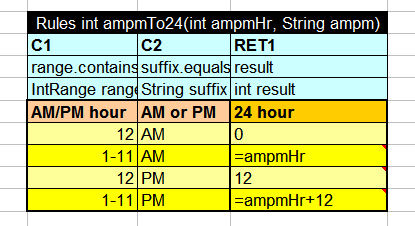

There is no need to describe here why Unit Tests are crucial to the system reliability and maintainability. OpenL Tablets provides a simple and convenient facility to create Unit Tests that are easy to create, modify and execute for either Business Users or Developers.
As you probably already know, OpenL Tablets project components are presented to the outside world as familiar to any
CS undergraduate class methods or attributes. Each OpenL Unit Test works on some OpenL Method using method parameters
as attributes of the Method Test Datatype. In addition to these parameters, the Datatype includes special attribute
_res_ that has type equal to the return type of the method and special attribute String _description_.
The special attributes were named this way to minimize the possibility of the name collision with Method parameters' names.
To illustrate the approach let's consider a simple example (from Tutorial 3): In Step 1 we demonstrate a Decision Table that is used to convert AM/PM hour to an hour based on 24 hours scale

The table has a Method Signature
int ampmTo24(int ampmHr, String ampm).
The test table for this table may look like this:
At this point you already should be familiar with Data Tables (if not, please do),
and you can see a striking similarity between Data Table and Testmethod table. The only difference is that instead of
the Data Type the Testmethod Table uses the Method Name, in this case ampmTo24. OpenL Tablets uses
the method's signature to dynamically generate(in memory) the Data Type, based on Method Parameters and Return Type + special
attributes _res_ and _description_.
For all other purposes Testmethod table behaves and looks like a regular Data Table. It means, that it can use both Foregn Key
or Aggregate notation to build a complex Object Graph to use complex object structures for rules testing
Here is how a successful test result looks like in the Studio:

Unit Tests tables in the Web Studio are marked by the icon

By clicking on this icon in the Project Tree Menu you can run all the project's tests

Test Result View shows the total number of tests, the number of Failed Tests, the total number of units(lines in Testmethod tables), the number of Failed Units, then all the test results with Failed Tests shown first.
Failed Units are marked by the icon

 in the Table View
in the Table View
 ). Then click on Test icon
). Then click on Test icon
Current implementation of Unit Tests allows only the testing of OpenL methods. To test Java methods you have to create a proxy OpenL method that would call the appropriate Java method and return the result. A Testmethod will point to the proxy method.
The similar approach can be used if you want for example, to test an attribute value in some business object, that have been changed by some actions. You will create a proxy method that will call a Decision Table and return the value of the attribute.